机甲战士
机甲战士（Jaeger）是人类为对抗巨大怪兽（Kaiju）而研发和建造的巨型机器人。这些机甲战士被设计成能够承受怪兽的攻击并反击，以保护人类和城市免受威胁。 每个机甲战士由两名驾驶员操控，他们需要进行心灵连接，通过共享记忆和意识来实现高度的协同作战。这种心灵连接被称为“通感（Drift）”，它使两名驾驶员能够共享彼此的思维和感情，从而更好地操纵机甲战士。 每个机甲战士都配备了强大的武器系统，包括近身格斗武器、远程攻击武器和防御装置。它们通常使用巨大的拳头、剑、枪等武器与怪兽进行战斗。机甲战士也具备一定的机动性和防护能力，可以在战场上机动迅速并承受来自怪兽的攻击。 每个机甲战士都有独特的外观和名称，代表着不同国家或地区的制造和驾驶团队。影片中展示了多种型号的机甲战士，例如美国的“危险流浪者”（Gipsy Danger）、中国的“暴风赤红”（Crimson Typhoon）、俄罗斯的“切尔诺阿尔法”（Cherno Alpha）等。
主角机甲和建造国
| 暴风赤红 | 危险流浪者 | 切尔诺阿尔法 | 尤里卡突袭者 |
|---|---|---|---|
| 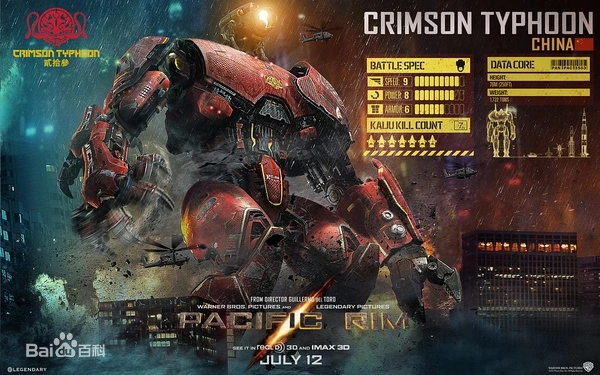 | 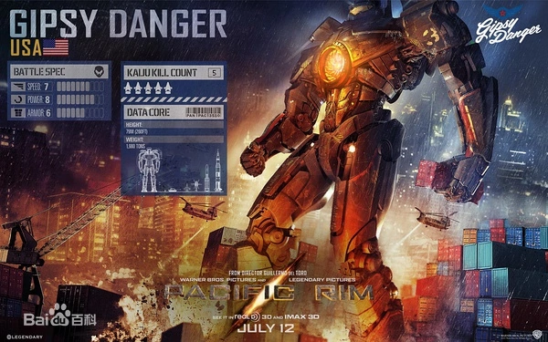 | 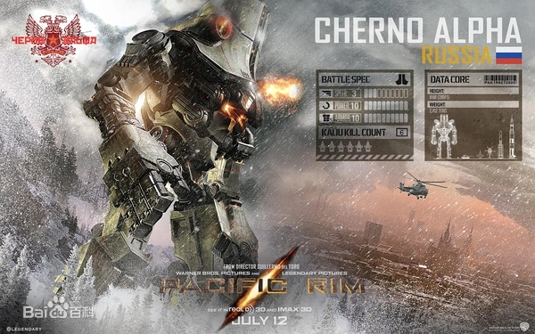 | 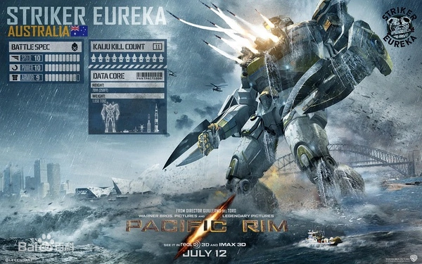 |
| 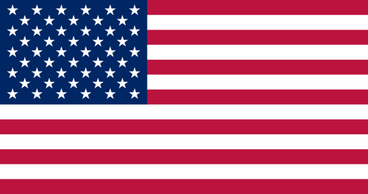 | 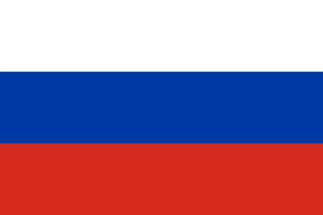 | 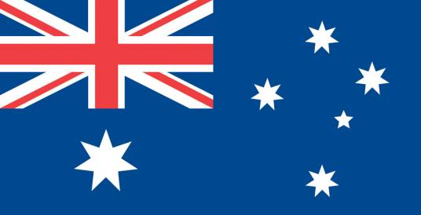 |
主角机甲介绍
| 暴风赤红 | 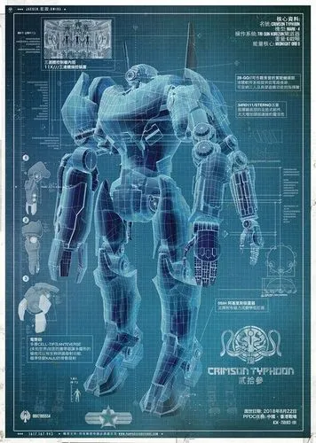 |
中国“猎人"机甲战士，纯钛内核，无杂质，每一条肌肉五十个柴油动力引擎，重1722吨，高76米，主要在香港战场作战，在中国江苏省常州市组建完毕。是片中唯一一个需要三人驾驶的机甲战士，由三位香港三胞胎华人所驾驶，每人控制一条手臂，他是五个机甲中格斗、肉搏顶尖的机甲战士，最独特的是他有三只手臂，从远处看像一只巨型红蜘蛛一般，柔韧性非常强。 左臂是这款机甲最大的亮点，具有生物识别功能，可瞄准怪兽骨骼精确攻击，能在远距离一炮秒杀怪兽，被誉为世界第一狙击手，近战又能变形为爆破装甲式的旋转刀，与怪兽搏斗，性能卓越。 其外形出色，采用大独眼造型，头部具有变焦望远镜功能，颈部非常灵活，右臂配有双拳，可以发出锋利的旋刀，旋刀的配合，再加上敏捷速度，可以变成暴风的格斗必杀技：雷云阵型，可以在肉搏战时发挥效力。作为五款机甲中最轻的一款，因此速度方面比较占优势，以上的武器使他成为了极端骇人的末日打手，它的警惕性、攻击性以及防守力都能得到极大的提升，并且这个格斗王在香港南部港口杀死了七头怪兽，杀敌数在所有机甲中排行第二。 |
| 危险流浪者 | 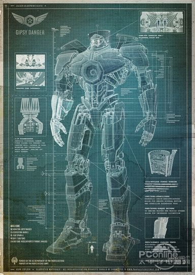 |
美国版“猎人”机甲战士，主要在美国阿拉斯加安克雷奇作战。同时成功抵挡了怪兽五次攻打（第五次战斗中损毁）。重1980吨，高79米，主要强调速度和格斗能力，剧中先头则是罗利兄弟驾驶，但由于2020年那场战争中罗利的兄长殉职，后期是罗利和MAKO一起驾驶流浪者。 采用最常见的双人操作系统，注重头部、前胸、后背、肩膀等要害位置的防护，且采用了核动力进行驱动，虽然造价高昂，但免去了常规动力机甲战士在补给和维修上的繁琐程序。另外据设计图纸显示，美国版机甲战士具备一定的海水利用技术，动力性和下盘稳定，主要强调肉搏战斗，并且在2020年流浪者战败之后，机甲被重新修理，为了提升流浪者的攻击、防护、电武器、核武器，他都有所提升。 |
| 切尔诺阿尔法 | 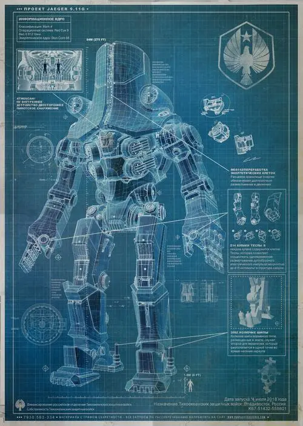 |
俄国 “猎人”机甲战士，是第一代机甲战士，所有机甲中块头最大的，最有力量的，防御性最好的，只不过速度较慢一些，高85米，重达2412吨，由来自俄国的Aleksis与sasha二人操纵，主要强调肉搏战斗，手部放电装置是亮点，外形像一个巨大的放电器，被称为“特斯拉拳”，每次能释放415千伏电压。 为了应对俄罗斯的天寒地冻，他们在俄罗斯版的机甲战士在设计上特别注重了防止低温海水对性能发挥不利，但俄罗斯人特意为切尔诺的战斗风格加入了古罗马摔跤术和西洋拳的特点，在关节设计上采用简单的扳手式手掌、手臂存在多种操作方式，号称战场上的战争机器，而最重要的头部也有厚厚的装甲保护，摔跤、力气，肉搏大大提升，但它速度方面较为落后，估计是受男驾驶员的影响。他在西伯利亚墙边境抵挡了怪兽六次进攻，颇为与众不同。 |
| 尤里卡突袭者 | 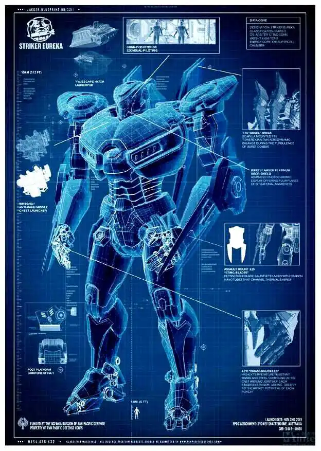 |
澳大利亚“猎人”机甲战士，第五代机甲，于2019年创建成功，这一款机甲的高度，体重都在于平均数据之上，这一款机甲是澳大利亚精心设计的完美机甲战士。高度76米，体重1850吨。 这款机甲亮点在于前胸的导弹，悉尼一战中，突袭者仅用6秒钟就打开胸部射出了导弹，直接导致怪兽一招死亡。 澳洲是最后一个遭受怪兽袭击的环太平洋地区，因此澳洲版机甲战士面世最晚，澳大利亚在悉尼遭到怪兽攻打的前一天就让它退役了，可它的击杀数量达到了最高的11只。驾驶员更是引人注目，父子一起连脑，难道不怕父亲知道儿子看你懂得网吗？数据几乎逆天，几乎满分，手臂上的腕刃，重击的铜拳，前胸的导弹，让这款机甲既可远程也可肉搏，反应速度很快，而且它还设计有逃生舱，差不多综合型机甲，因此这款机甲可能比前四款机甲的科技强一些，可以说集前几款机甲的精华所创。 |